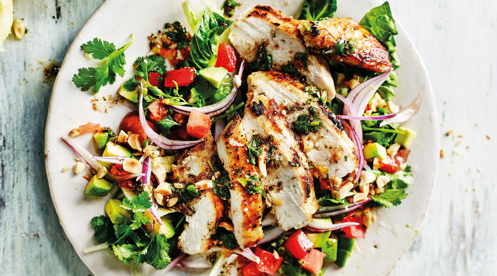

Recipe of Chiken Salad
Classic Chicken Salad is the PERFECT combo of seasoned chicken breast,
creamy mayonnaise, lemon juice and crunchy celery, ready in just minutes!
We love great lunch and picnic options, and this recipe is perfect for a
potluck or picnic along with other favorites like Macaroni Salad, Easy
Cole Slaw (Coleslaw), and Best EVER Baked Beans!

Ingredients
- 4 cups diced poached chicken, recipe follows
- 1 stalk celery, cut into 1/4-inch dice
- 4 scallions, trimmed and thinly sliced or 1/4 cup sweet onion cut into 1/4-inch dice
- 1 1/2 teaspoons finely chopped fresh tarragon or fresh dill 4
- 2 tablespoons finely chopped parsley
- 1 cup prepared or homemade mayonnaise
- 2 teaspoons strained freshly squeezed lemon juice
- 1 teaspoon Dijon mustard
- 2 teaspoons kosher salt
- Freshly ground black pepper
Steps
- In a mixing bowl, toss together the chicken, celery, scallions and herbs. Set aside.
- n a small bowl, whisk together the mayonnaise, lemon juice, mustard, salt and pepper to taste. Add to the chicken and mix gently until combined. Refrigerate until ready to serve.
- Put the parsley, thyme, onion, carrot, celery, and chicken breasts in a medium saucepan. Cover with the broth, and bring just to a boil. Lower the heat to very low and cover. Poach the chicken for 20 minutes or until firm to the touch. Remove the pan from the heat, uncover, cool the chicken in the liquid for 30 minutes.
- Transfer the chicken to a cutting board and reserve the liquid. Bone and skin the chicken and cut the meat into 1 inch cubes. Discard the bones and skin.
- Strain the broth and store, covered, in the refrigerator for 3 days or freeze for later use. Remove any fat from the surface of the broth before using.